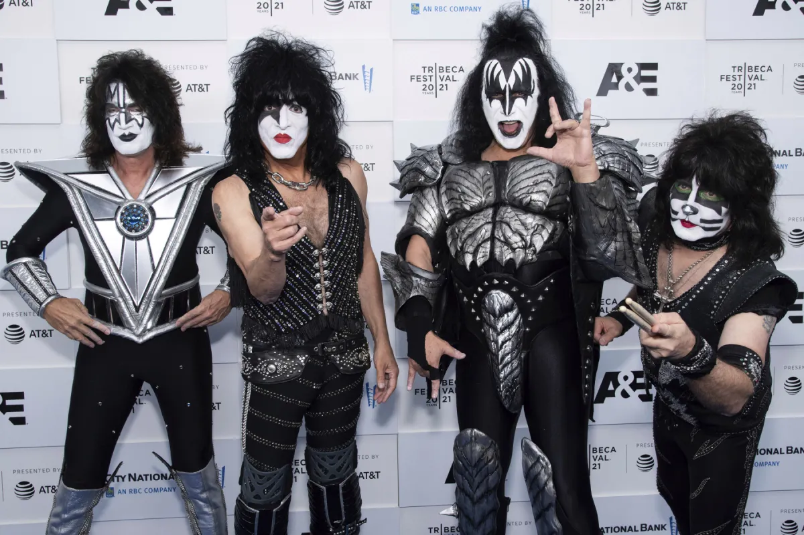

Gene Simmons y Paul Stanley tienen coronavirus
Kiss pospuso las próximas cuatro fechas de su gira por América del Norte después de que Gene Simmons diera positivo en Covid-19.
Kiss pospuso las próximas cuatro fechas de su gira por América del Norte después de que Gene Simmons diera positivo en Covid-19.
La legendaria banda de rock Kiss dio su último concierto en Argentina y sus fans se congregaron en el Campo Argentino de Polo de Buenos Aires para vivir una noche llena de hits, pirotecnia, sangre de mentira y lluvia de papel picado.
Netflix estaría cerca de un acuerdo comercial para realizar Shout It Out Loud, una biopic basada en la banda Kiss.
Parece una parodia de toda la información (hoy hablaríamos de fake news) que rodeaba al fenómeno desatado por Kiss en Argentina hacia 1980, cuando las leyendas sobre el grupo de heavy metal-glam habían edificado una narrativa del mal en los medios y, también, apropiada como gesto de osadía entre sus fans adolescentes. Se decía entonces que Gene Simmons, el bajista, se había injertado una lengua de vaca; que el grupo soltaba pollitos vivos en el escenario para pisarlos; que ofrecían un millón de dólares a quien se suicidara durante uno de sus shows; que el nombre ocultaba una sigla oprobiosa: Kings of Imperial Satan Service (Reyes del Servicio Imperial de Satán). Los puristas que venían escuchando a Kiss desde 1975, en cambio, decían otra cosa. Que con "I Was Made For Lovin’ You" el grupo había vendido su alma a otro diablo, el negocio de la música disco. Y es que con esa línea de bajo marchosa, un canturreo lascivo y un estribillo universal Kiss consiguió su primer crossover: salieron del nicho del heavy metal para volverse pop.